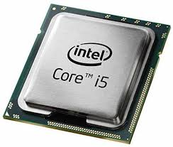
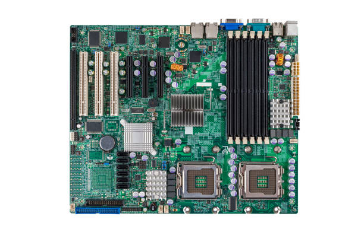
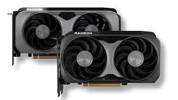
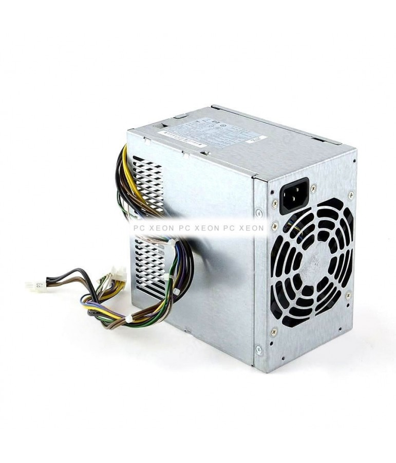
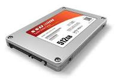

Procesador (CPU)
Es el cerebro del ordenador. Ejecuta todas las instrucciones del sistema.

Memoria RAM
Almacena datos temporales para que el sistema funcione rápidamente.

Placa Base
Conecta todos los componentes entre sí.

Tarjeta Gráfica (GPU)
Se encarga del procesamiento de gráficos e imágenes.

Fuente de Alimentación
Suministra energía a todos los componentes.

Disco Duro / SSD
Almacena el sistema operativo y los archivos.

Artículo de Xataka sobre coste de RAM y solución de HP